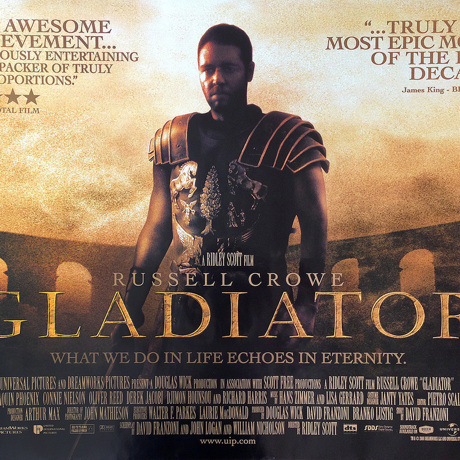
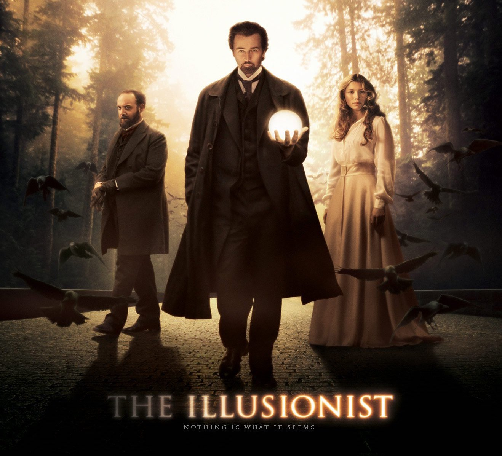

Cool brown air guy that loves studying and programming
|  | GladiatorCommodus (Joaquin Phoenix) takes power and strips rank from Maximus, one of the favored generals of his predecessor and father, Emperor Marcus Aurelius, the great stoical philosopher. Maximus is then relegated to fighting to the death in the gladiator arenas. |
|  | The IllusionistA master magician named Eisenheim vies with Crown Prince Leopold of Vienna for the hand of noblewoman Sophie, the girl he once loved. He brings his considerable powers to bear on the prince, as she is about to be named royal fiancee. However, a police inspector named Uhl tries to warn Eisenheim that he is playing a very dangerous game. |
The PrestigeAn illusion gone horribly wrong pits two 19th-century magicians, Alfred Borden and Rupert Angier, against each other in a bitter battle for supremacy. Terrible consequences loom when the pair escalate their feud, each seeking not just to outwit -- but to destroy -- the other man. |
This page has been coded during the FullStack program @LeWagon. That was probably the best experience of my entire life.